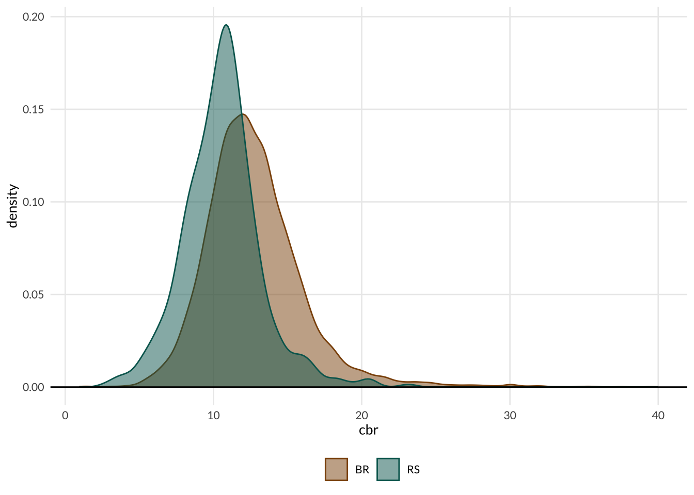

library(dplyr)
library(sf)
library(showtext)
library(biscale)
library(cowplot)
library(gt)
library(gtExtras)
library(ggplot2)
library(MetBrewer)
font_add_google("Lato", "Lato")
showtext_auto()
theme_plots <- theme_minimal(base_family = "Lato", base_size = 10) +
theme(
panel.grid.minor = element_blank()
)Demography in Brazil
records <- qs::qread(here::here("static/data/birth_death_rate.qs"))
rec <- as_tibble(st_drop_geometry(records))
dat <- readr::read_rds(here::here("static/data/births_weddings.rds"))births_state <- dat$births |>
filter(sex_children_born == "total") |>
mutate(year = as.numeric(year)) |>
summarise(
year_births = sum(total_births, na.rm = TRUE), .by = c("year", "name_state")
)
pop_state <- dat$pop |>
filter(age_group == "Total", sex == "total") |>
rename(pop = value)
tab_birth <- births_state |>
left_join(pop_state, by = c("year", "name_state")) |>
mutate(cbr = year_births / pop * 1000)dim_state <- as_tibble(st_drop_geometry(geobr::read_state(showProgress = FALSE)))
dim_state <- dim_state |>
mutate(name_state = stringr::str_replace(name_state, "Espirito Santo", "Espírito Santo"))
tab_birth <- tab_birth |>
mutate(name_state = stringr::str_to_title(name_state)) |>
left_join(dim_state, by = "name_state")end_point <- tab_birth |>
filter(year == max(year))
ranks <- tab_birth |>
filter(year == max(year)) |>
mutate(rank_state = rank(cbr), .by = "name_region") |>
select(code_region, name_state, rank_state)
tab_birth <- tab_birth |>
left_join(ranks, by = c("code_region", "name_state")) |>
mutate(
rank = as.numeric(paste0(code_region, rank_state)),
abbrev_state = forcats::fct_reorder(abbrev_state, rank)
)
inds <- ranks |>
filter(rank_state == max(rank_state), .by = "code_region") |>
pull(rank_state)
colors <- lapply(inds, \(x) as.character(met.brewer("Hokusai1", x)))
colors <- unlist(colors)ggplot(tab_birth, aes(year, cbr, color = abbrev_state)) +
geom_line() +
ggrepel::geom_label_repel(
data = end_point,
aes(year, cbr, label = abbrev_state),
family = "Lato"
) +
scale_x_continuous(limits = c(NA, 2023)) +
scale_color_manual(name = "", values = colors) +
facet_wrap(vars(name_region)) +
guides(color = "none") +
theme_minimal(base_family = "Lato", base_size = 10) +
theme(
panel.grid.minor = element_blank()
)rs <- filter(records, code_state == 33)
rs <- rs |>
mutate(
scaled_cbr = as.numeric(scale(cbr)),
group = factor(findInterval(scaled_cbr, seq(-2.5, 2.5, 1)))
)
rec |>
mutate(is_rs = factor(if_else(code_state == 43, 1L, 0L))) |>
ggplot(aes(x = cbr, color = is_rs, fill = is_rs)) +
geom_density(alpha = 0.5) +
geom_hline(yintercept = 0) +
scale_x_continuous(limits = c(NA, 40)) +
scale_color_manual(
name = "",
values = c("#8c510a", "#01665e"),
labels = c("BR", "RS")) +
scale_fill_manual(
name = "",
values = c("#8c510a", "#01665e"),
labels = c("BR", "RS")) +
theme_plots +
theme(legend.position = "bottom")
ggplot(rs) +
geom_sf(aes(fill = group), color = "white", lwd = 0.1) +
scale_fill_brewer(
name = "Standard Deviations",
palette = "RdBu",
labels = c("< -2.5", "-2.5 to -1.5", "-1.5 to -0.5", "-0.5 to 0.5",
"0.5 to 1.5", "1.5 to 2.5", "> 2.5")
) +
ggthemes::theme_map(base_family = "Lato")biscale_map_state <- function(
cd_state,
leg.x = 0.6,
leg.y = 0.1,
leg.width = 0.2,
leg.heigth = leg.width,
include_legend = TRUE) {
dat <- dplyr::filter(records, code_state == cd_state)
map_state <- ggplot(dat) +
geom_sf(
aes(fill = bi_class_state),
color = "white",
lwd = 0.1,
show.legend = FALSE
) +
bi_scale_fill(pal = "DkViolet2", dim = 3, flip_axes = TRUE) +
bi_theme(base_family = "Lato")
if (include_legend) {
legend <- bi_legend(
"DkViolet2",
flip_axes = TRUE,
dim = 3,
size = 12,
xlab = "Birth Rate",
ylab = "Death Rate"
)
finalPlot <- ggdraw() +
draw_plot(map_state, 0, 0, 1, 1) +
draw_plot(legend, leg.x, leg.y, leg.width, leg.width)
return(finalPlot)
}
return(map_state)
}
biscale_map_state(43)rec = as_tibble(st_drop_geometry(records))rec |>
filter(deaths > births) |>
nrow()[1] 828Close to 15% of all cities
tab1 <- rec |>
filter(deaths > births, population > 50000) |>
arrange(desc(cdr)) |>
select(name_muni, abbrev_state, cbr, cdr, births, deaths, population)
gt(tab1) |>
fmt_number(3:4, decimals = 1, dec_mark = ",") |>
fmt_number(5:7, sep_mark = ".", decimals = 0)| name_muni | abbrev_state | cbr | cdr | births | deaths | population |
|---|---|---|---|---|---|---|
| Cachoeira Do Sul | RS | 11,0 | 12,7 | 882 | 1.018 | 80.070 |
| Petrópolis | RJ | 11,3 | 11,7 | 3.146 | 3.258 | 278.881 |
| Santos | SP | 9,1 | 11,6 | 3.807 | 4.838 | 418.608 |
| Rio Grande | RS | 10,8 | 11,4 | 2.070 | 2.194 | 191.900 |
| São Borja | RS | 11,2 | 11,4 | 666 | 682 | 59.676 |
| Tupã | SP | 9,2 | 11,4 | 589 | 730 | 63.928 |
| Penápolis | SP | 11,0 | 11,3 | 676 | 697 | 61.679 |
| Valença | RJ | 10,4 | 11,3 | 710 | 767 | 68.088 |
| Alegrete | RS | 10,3 | 10,9 | 743 | 791 | 72.409 |
| Cataguases | MG | 9,3 | 10,9 | 619 | 722 | 66.261 |
| Niterói | RJ | 10,8 | 10,9 | 5.205 | 5.249 | 481.749 |
| São Caetano Do Sul | SP | 8,5 | 10,9 | 1.416 | 1.803 | 165.655 |
| Pelotas | RS | 10,5 | 10,8 | 3.421 | 3.525 | 325.685 |
| Taquaritinga | SP | 10,2 | 10,3 | 531 | 536 | 52.260 |
| Itapira | SP | 8,9 | 10,2 | 641 | 736 | 72.022 |
| Nilópolis | RJ | 9,5 | 10,2 | 1.399 | 1.499 | 146.774 |
| Leopoldina | MG | 9,7 | 10,0 | 498 | 514 | 51.145 |
| Barra Do Piraí | RJ | 9,5 | 9,6 | 884 | 888 | 92.883 |